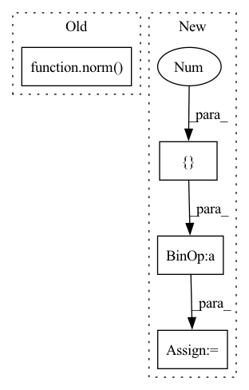

Pattern ID :29899
Before Change
blocks = [
DepthwiseSeparableConv1d(conv_channels[0], kernel_size,),
norm() ,
activation(beta) if isinstance(activation, Swish) else activation(),
]
After Change
if conv_channels is None:
conv_channels = [*[256] * 10, *[512] * 11]
if strides is None:
strides = [1 ] * num_blocks
strides[2] = 2
strides[6] = 2
strides[13] = 2In pattern: SUPERPATTERN
Frequency: 3
Non-data size: 4
Instances Fragment ID: 88728529
Project Name: speechbrain/speechbrain
Commit Name: 103f6355cf82a6e4b7b52db443400578e70d0ac8
Time: 2020-08-25
Author: plantinga.peter@protonmail.com
File Name: speechbrain/lobes/models/ContextNet.py
M Class Name: ContextNet
N Class Name: ContextNet
M Method Name: __init__(16)
N Method Name: __init__(15)
M Parent Class: Sequential
N Parent Class: Sequential
M File Name: speechbrain/lobes/models/ContextNet.py
N File Name: speechbrain/lobes/models/ContextNet.py
M Start Line: 81
M End Line: 141
N Start Line: 64
N End Line: 124
Before Change
def test_normalize_has_correct_mean_std():
norm = FeatureBatchNormalizer()
x = torch.randn(10, 40, 1337)
out = norm( x)
// Testing for each element in the batch
for xb in out:
assert torch.allclose(xb[:, :].mean(), torch.zeros(1), atol=0.1)
assert torch.allclose(xb[:, :].std(), torch.ones(1), atol=0.1)After Change
def test_normalize_has_correct_mean_std():
norm = FeatureBatchNormalizer()
x = torch.randn(10, 40, 1337)
lens = torch.Tensor([1337 ] * 10)
out, _ = norm(x, lens)
// Testing for each element in the batch
for xb in out:
assert torch.allclose(xb[:, :].mean(), torch.zeros(1), atol=0.1) Fragment ID: 88728532
Project Name: scart97/thunder-speech
Commit Name: 4da296ef28cbfeb2efffadce4d51ea6d7a2a2eaf
Time: 2021-11-30
Author: scart.lucas@gmail.com
File Name: tests/quartznet/test_transform_qn.py
M Class Name: AnonimousClass
N Class Name: AnonimousClass
M Method Name: test_normalize_has_correct_mean_std(0)
N Method Name: test_normalize_has_correct_mean_std(0)
M Parent Class:
N Parent Class:
M File Name: tests/quartznet/test_transform_qn.py
N File Name: tests/quartznet/test_transform_qn.py
M Start Line: 44
M End Line: 45
N Start Line: 46
N End Line: 48
Before Change
def test_normalize_preserve_shape():
norm = FeatureBatchNormalizer()
x = torch.randn(10, 40, 1337)
out = norm( x)
assert out.shape[0] == x.shape[0]
assert out.shape[1] == x.shape[1]
assert out.shape[2] == x.shape[2]After Change
def test_normalize_preserve_shape():
norm = FeatureBatchNormalizer()
x = torch.randn(10, 40, 1337)
lens = torch.Tensor([1000 ] * 10)
out, out_lens = norm(x, lens)
assert out.shape[0] == x.shape[0]
assert out.shape[1] == x.shape[1] Fragment ID: 88728534
Project Name: scart97/thunder-speech
Commit Name: 4da296ef28cbfeb2efffadce4d51ea6d7a2a2eaf
Time: 2021-11-30
Author: scart.lucas@gmail.com
File Name: tests/quartznet/test_transform_qn.py
M Class Name: AnonimousClass
N Class Name: AnonimousClass
M Method Name: test_normalize_preserve_shape(0)
N Method Name: test_normalize_preserve_shape(0)
M Parent Class:
N Parent Class:
M File Name: tests/quartznet/test_transform_qn.py
N File Name: tests/quartznet/test_transform_qn.py
M Start Line: 34
M End Line: 35
N Start Line: 34
N End Line: 41